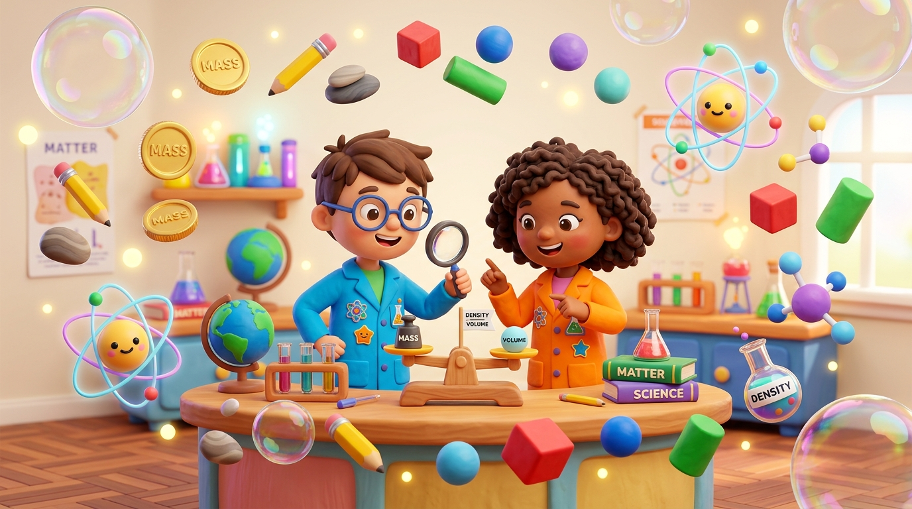
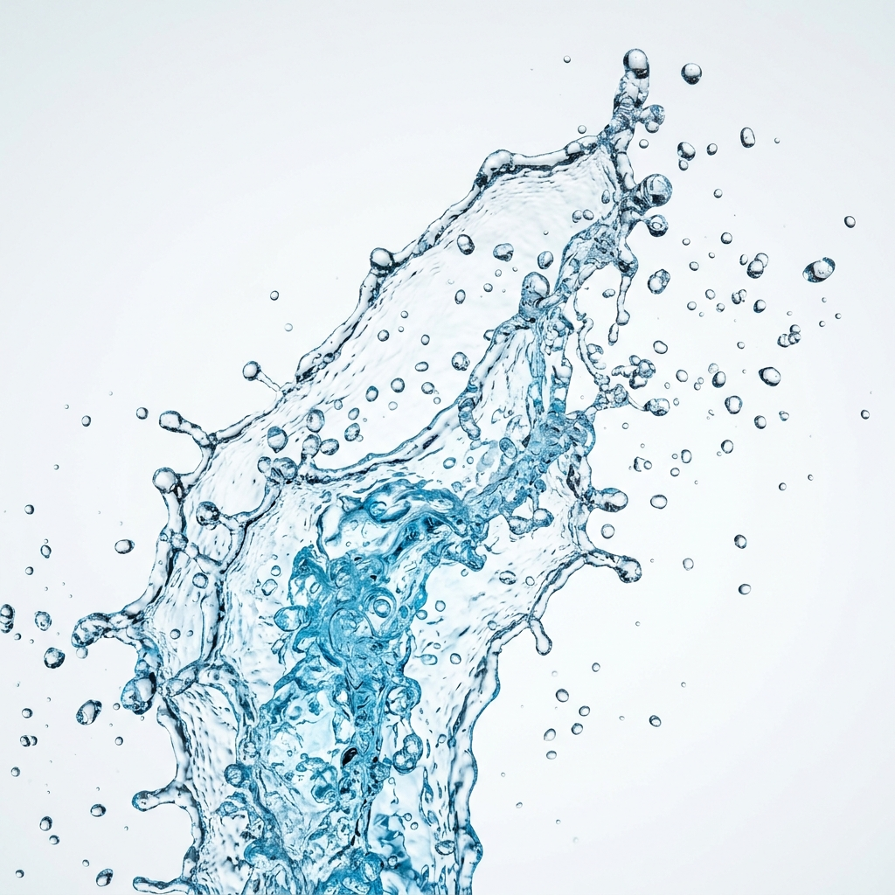
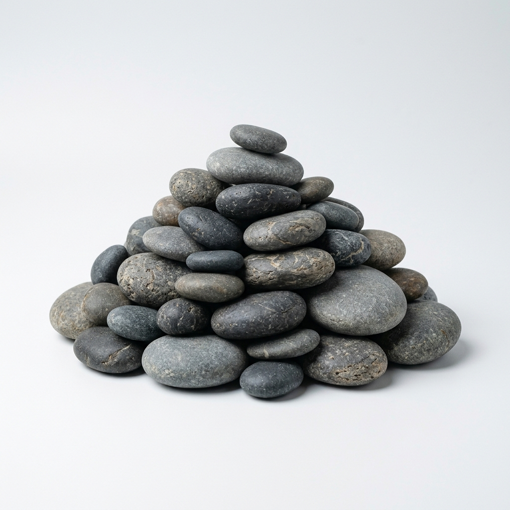
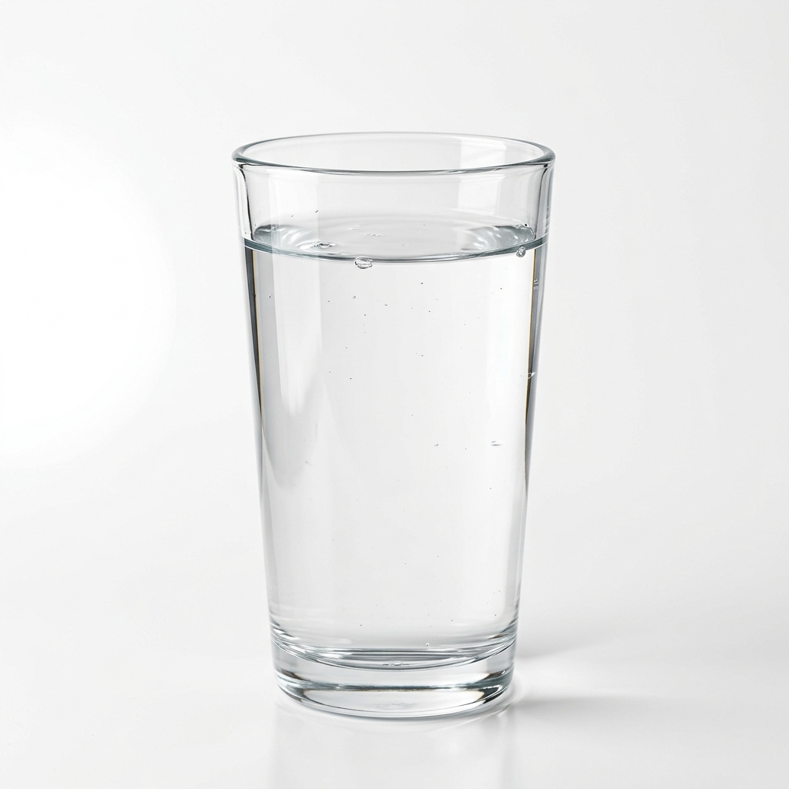
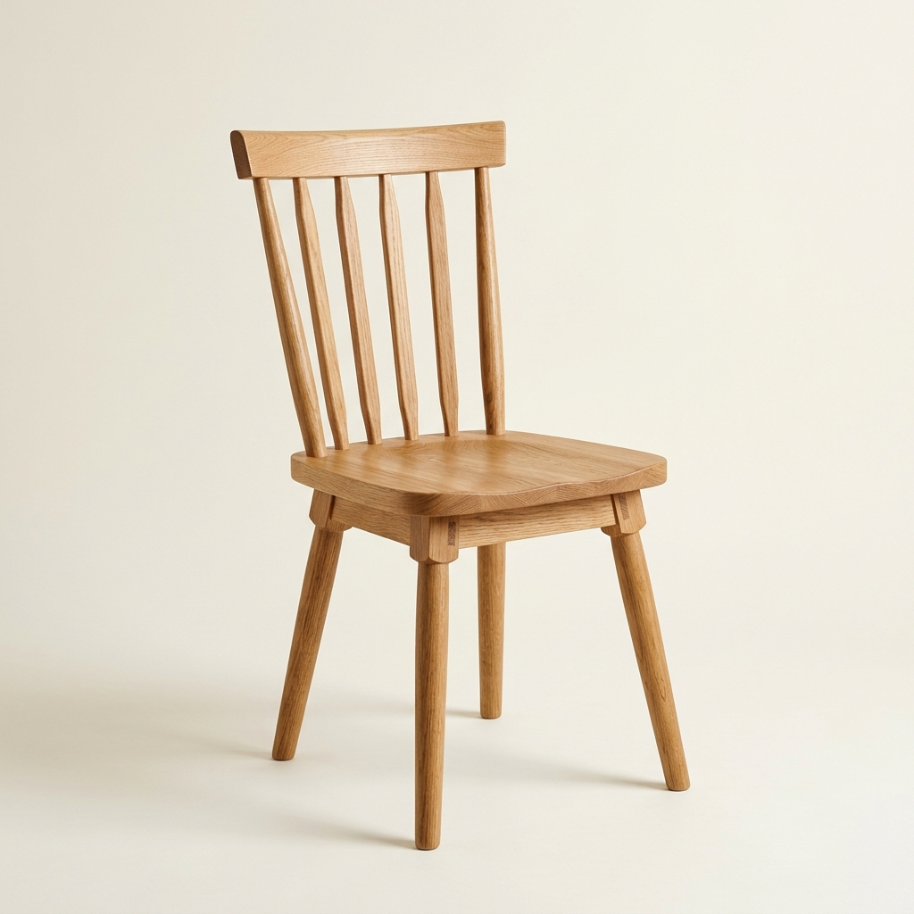
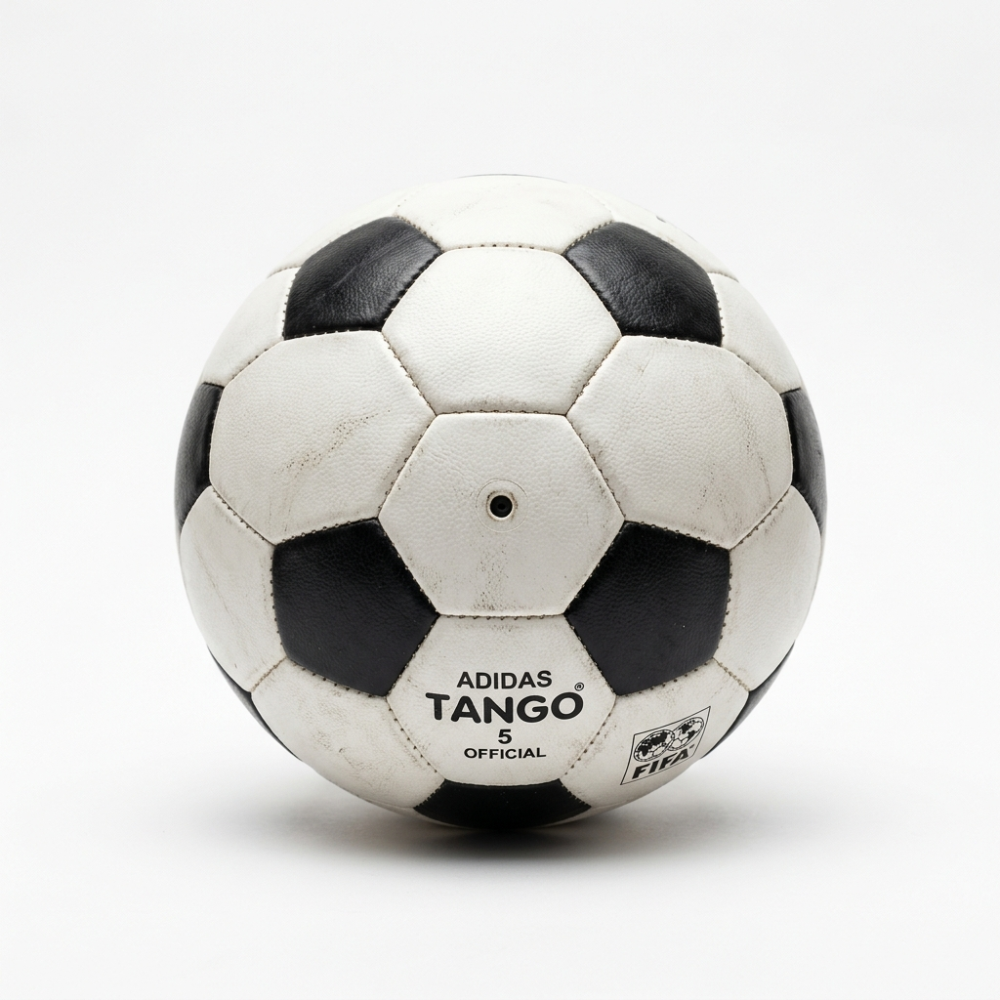
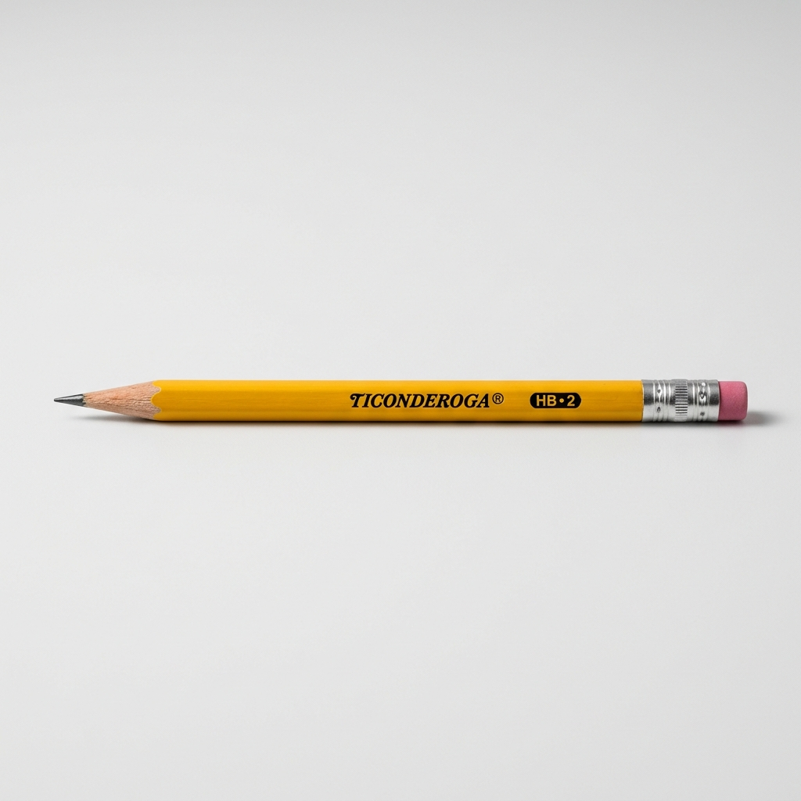
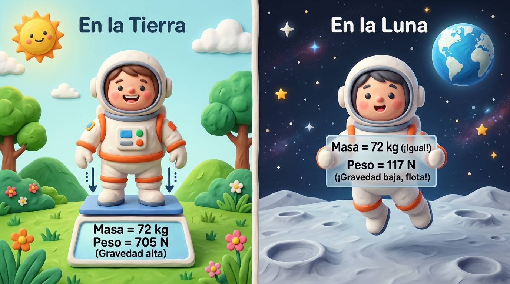
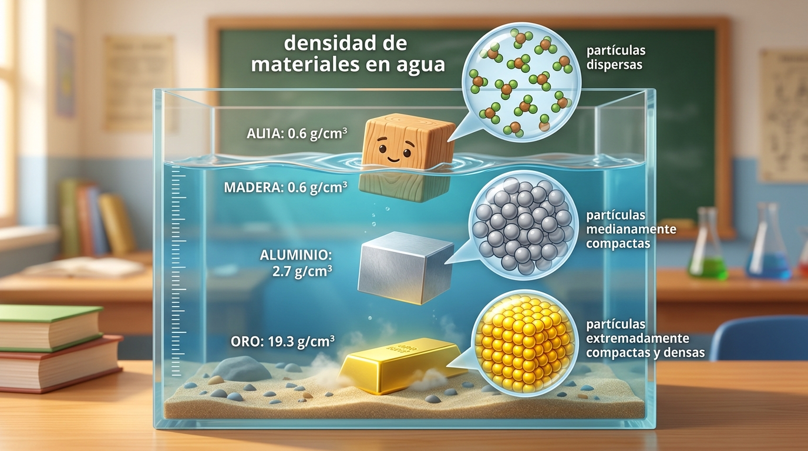
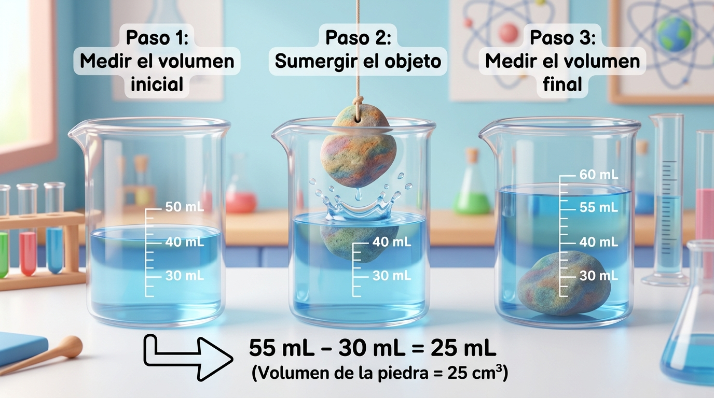

MATERIA, MASA
Y DENSIDAD
¿Por qué algunos objetos son más pesados que otros? 🤔
Explora, observa y descubre cómo podemos conocer las características de los objetos que nos rodean mediante mini laboratorios interactivos, simuladores en tiempo real y experimentos guiados.

Materia y Cuerpo
Materia y cuerpo
Todo cuerpo está formado por materia
La materia es todo aquello que tiene masa y ocupa un lugar en el espacio.

Agua
(líquido)
Piedra
(sólido)Aire
(gaseoso)Un cuerpo es una porción de materia que tiene forma y límites definidos.

Vaso
(de vidrio)
Silla
(de madera)
Pelota
(de cuero)En resumen: la materia es el “qué” (de qué está hecho), y el cuerpo es el “cómo” (la forma en que se presenta).
🎒 Cuerpos Clave de tu Tarea Escolar:

¿Cuál de estos objetos está formado por materia?
Toca cualquier tarjeta cotidiana para revelar si representa la sustancia fundamental (Materia) o un objeto delimitado con forma propia (Cuerpo):
Masa y Peso no son lo mismo
Descubre por qué la balanza mide una cosa y el dinamómetro otra muy diferente.
⚖️ La Masa
Es la cantidad de materia que contiene un cuerpo. ¡Es fija e invariable en cualquier planeta del universo!
🧭 El Peso
Es la fuerza que ejerce la gravedad sobre un cuerpo. Cambia según el lugar donde te encuentres.
Masa = cantidad de materia (kg). | Peso = fuerza de gravedad (N).

🧑🚀 Caso Real: Una persona con una masa de 72 kg
P = m · gEn la Tierra
Masa = 72 kg
Peso = ~706 N (g = 9.8 m/s²)
Gravedad estándarEn la Luna
Masa = 72 kg (¡mantiene la misma masa!)
Peso = ~117 N (la gravedad es 6 veces menor)
¡Puede dar saltos gigantes!Selecciona un destino espacial para ver cómo la masa permanece fija mientras el peso en Newtons cambia de inmediato:
¿Qué es el Volumen?
El volumen es el espacio tridimensional que ocupa un cuerpo.
¿Qué es la Densidad?
La densidad nos indica cuánta masa existe en un determinado volumen. Es una característica que ayuda a identificar diferentes materiales en la naturaleza.

Menor que 1.0 g/cm³. ¡Flota alegremente en la superficie!
Mayor que 1.0 g/cm³. Se sumerge en el recipiente.
Extremadamente denso. Se hunde directo al fondo.
Haz clic en cualquier material para lanzarlo al tanque de agua virtual y ver si flota o se hunde:
¡Vamos a Calcular!
Aprende a aplicar la fórmula con el ejercicio exacto de la tarea escolar:
Ejemplo de la Tarea: Densidad de una Piedra
Datos experimentales del laboratorio escolar
Objeto Irregular
¿Cómo medir el volumen de algo que no es un cubo ni una esfera? Para conocer el volumen de un objeto irregular podemos utilizar el desplazamiento de agua.
Coloca agua en un recipiente graduado.
Observa el volumen inicial.
Introduce completamente el objeto.
Observa el nuevo nivel del agua.
Calcula la diferencia.

Ejemplo de la Tarea: 30 mL → 55 mL. | Diferencia: 25 mL. | Volumen del objeto: 25 cm³.
Lo Que Debes Recordar
Forma los objetos
Todo aquello que forma los objetos que nos rodean. Tiene masa y ocupa espacio.
Cantidad de materia
Cantidad de materia contenida en un cuerpo. Se mide con balanza.
Fuerza gravitacional
Fuerza que la gravedad ejerce sobre el cuerpo. Se mide con dinamómetro.
Espacio ocupado
Espacio que ocupa un cuerpo. Puede medirse con fórmulas o desplazamiento de agua.
Relación entre masa y volumen
Característica única que distingue y permite identificar a cada material.
1. Si una persona viaja a la Luna, ¿su masa disminuye?
2. La fórmula matemática de la densidad es:
3. Para medir el volumen de un objeto irregular utilizamos: